Analysing the MASH results
Last updated: 2021-08-05
Checks: 7 0
Knit directory: DGRP_sexual_conflict/
This reproducible R Markdown analysis was created with workflowr (version 1.6.2). The Checks tab describes the reproducibility checks that were applied when the results were created. The Past versions tab lists the development history.
Great! Since the R Markdown file has been committed to the Git repository, you know the exact version of the code that produced these results.
Great job! The global environment was empty. Objects defined in the global environment can affect the analysis in your R Markdown file in unknown ways. For reproduciblity it’s best to always run the code in an empty environment.
The command set.seed(20210706) was run prior to running the code in the R Markdown file. Setting a seed ensures that any results that rely on randomness, e.g. subsampling or permutations, are reproducible.
Great job! Recording the operating system, R version, and package versions is critical for reproducibility.
Nice! There were no cached chunks for this analysis, so you can be confident that you successfully produced the results during this run.
Great job! Using relative paths to the files within your workflowr project makes it easier to run your code on other machines.
Great! You are using Git for version control. Tracking code development and connecting the code version to the results is critical for reproducibility.
The results in this page were generated with repository version 4767352. See the Past versions tab to see a history of the changes made to the R Markdown and HTML files.
Note that you need to be careful to ensure that all relevant files for the analysis have been committed to Git prior to generating the results (you can use wflow_publish or wflow_git_commit). workflowr only checks the R Markdown file, but you know if there are other scripts or data files that it depends on. Below is the status of the Git repository when the results were generated:
Ignored files:
Ignored: .DS_Store
Ignored: .Rproj.user/
Untracked files:
Untracked: analysis/SNP_correlations.Rmd
Untracked: code/gcta64
Untracked: code/launch_slurm.bash
Untracked: code/plink
Untracked: code/run_mashr.R
Untracked: gwas_data/
Note that any generated files, e.g. HTML, png, CSS, etc., are not included in this status report because it is ok for generated content to have uncommitted changes.
These are the previous versions of the repository in which changes were made to the R Markdown (analysis/process_mashr.Rmd) and HTML (docs/process_mashr.html) files. If you’ve configured a remote Git repository (see ?wflow_git_remote), click on the hyperlinks in the table below to view the files as they were in that past version.
| File | Version | Author | Date | Message |
|---|---|---|---|---|
| Rmd | 4767352 | lukeholman | 2021-08-05 | wflow_publish(“analysis/process_mashr.Rmd”) |
library(tidyverse)
library(mashr)
library(glue)
library(RColorBrewer)
library(future)
library(future.apply)
options(show_col_types = FALSE)
files <- list.files("gwas_data/derived/mashr_results", full.names = TRUE)Load and process the results of mashr
This takes several minutes and lots of RAM, there’s a few hundred big files. Uses parallel processing via future.
process_mashr_results <- function(mashr_file){
trait_name <- str_remove(str_split(mashr_file, "/")[[1]][4], ".rds")
# print(mashr_file)
mash_ED <- readRDS(mashr_file)
# Get the list of SNPs analysed, and the mashr result itself out of the file:
SNPs <- mash_ED[[1]]
mash_ED <- mash_ED[[2]]
# Get the mixture proportions (prop. SNPs assigned to each of the 4 kinds of covariance matrix)
mixture_proportions <- get_estimated_pi(mash_ED)
# Get the U covariance matrices, convert to correlations, and round off to +/- 1
U_list <- mash_ED$fitted_g$Ulist
U_list <- lapply(U_list, function(x) sign(cov2cor(x)))
# Define the 6 possible types of covariance matrix that mashr can pick
# (it picks a subset of these, depending on the signals in the data)
U_types <- list(
concord_traitpos = matrix(rep(1,9), nrow = 3),
antag_posfemales = matrix(c(1,1,-1,1,1,-1,-1,-1,1), nrow = 3),
antag_posmales = matrix(c(1,-1,1,-1,1,-1,1,-1,1), nrow = 3),
concord_traitneg = matrix(c(1,-1,-1,-1,1,1,-1,1,1), nrow = 3),
dimorphism_femaleup = matrix(c(1,1,1,1,1,-1,1,-1,1), nrow = 3),
dimorphism_maleup = matrix(c(1,1,-1,1,1,1,-1,1,1), nrow = 3))
# Give new names to the matrices in the mashr object (e.g. PC1 might become concord_traitpos)
new_ED_names <- names(U_types[
sapply(1:4, function(i){ # 4 U matrices fit by the model
which(sapply(1:6, function(j) { # 6 possible matrix types
isTRUE(all.equal(U_list[[i]], U_types[[j]]))
}))
})])
# Check for duplicates. Sometimes the tPCA matrix is essentially the same type as one of the PCs, with different variances
# Duplicates get named e.g. concord_traitpos_2
if(any(duplicated(new_ED_names))){
new_ED_names[duplicated(new_ED_names)] <- paste(new_ED_names[duplicated(new_ED_names)], 2, sep = "_")
}
# Assign the names to the fitted matrices and mixture proportions
U_list <- mash_ED$fitted_g$Ulist
names(U_list) <- new_ED_names
names(mixture_proportions)[names(mixture_proportions) != "null"] <- new_ED_names
# Get the mashr-adjusted effect sizes for every SNP/trait, and the local false sign rates too
posterior_effect_size <- as.data.frame(get_pm(mash_ED))
names(posterior_effect_size) <- c("trait_effect", "f_fitness_effect", "m_fitness_effect")
lfsr <- as.data.frame(get_lfsr(mash_ED))
names(lfsr) <- c("trait_lfsr", "f_fitness_lfsr", "m_fitness_lfsr")
# Get the mixture weights for each SNP, as advised by mashr authors here:
# https://github.com/stephenslab/mashr/issues/68
posterior_weights_cov <- mash_ED$posterior_weights
colnames(posterior_weights_cov) <- sapply(
str_split(colnames(posterior_weights_cov), '\\.'),
function(x) {
if(length(x) == 1) return(x)
else if(length(x) == 2) return(x[1])
else if(length(x) == 3) return(paste(x[1], x[2], sep = "."))
})
posterior_weights_cov <- t(rowsum(t(posterior_weights_cov),
colnames(posterior_weights_cov))) %>%
as.data.frame()
names(posterior_weights_cov)[names(posterior_weights_cov) == "ED_PCA_1"] <- new_ED_names[1]
names(posterior_weights_cov)[names(posterior_weights_cov) == "ED_PCA_2"] <- new_ED_names[2]
names(posterior_weights_cov)[names(posterior_weights_cov) == "ED_PCA_3"] <- new_ED_names[3]
names(posterior_weights_cov)[names(posterior_weights_cov) == "ED_tPCA"] <- new_ED_names[4]
# Make a data frame with info about each SNP (effect, LFSR, mixture assignments)
mashr_SNP_data <- cbind(SNP = SNPs,
posterior_effect_size,
lfsr, posterior_weights_cov) %>%
as_tibble() %>%
arrange(trait_lfsr + f_fitness_lfsr + m_fitness_lfsr)
# Identify SNPs that pass a certain LFSR threshold for all 3 traits (0.1, 0.05, 0.01)
sig_SNPs_p10 <- mashr_SNP_data %>%
filter(trait_lfsr < 0.1 & f_fitness_lfsr < 0.1 & m_fitness_lfsr < 0.1)
sig_SNPs_p05 <- mashr_SNP_data %>%
filter(trait_lfsr < 0.05 & f_fitness_lfsr < 0.05 & m_fitness_lfsr < 0.05)
sig_SNPs_p01 <- sig_SNPs_p05 %>%
filter(trait_lfsr < 0.01 & f_fitness_lfsr < 0.01 & m_fitness_lfsr < 0.01)
# Function to categorise the significant SNPs as concord traitpos, antag malepos, etc.
categorise <- function(sig_snps){
if(nrow(sig_snps) == 0) return("Not enough significant SNPs")
type <- sig_snps %>%
mutate(type = case_when(
sign(f_fitness_effect) == sign(m_fitness_effect) & sign(m_fitness_effect) == sign(trait_effect) ~ "SC, +ve selection",
sign(f_fitness_effect) == sign(m_fitness_effect) & sign(m_fitness_effect) != sign(trait_effect) ~ "SC, -ve selection",
sign(f_fitness_effect) != sign(m_fitness_effect) & sign(m_fitness_effect) == sign(trait_effect) ~ "SA, +ve in males",
sign(f_fitness_effect) != sign(m_fitness_effect) & sign(f_fitness_effect) == sign(trait_effect) ~ "SA, +ve in females",
NA ~ "ERROR")) %>% pull(type)
type <- factor(type, c("SC, +ve selection", "SC, -ve selection", "SA, +ve in males", "SA, +ve in females"))
female_fitness_effect <- sig_snps %>%
mutate(type = case_when(
f_fitness_effect < 0 ~ "Female-harmful minor allele",
f_fitness_effect > 0 ~ "Female-beneficial minor allele",
NA ~ "ERROR")) %>% pull(type)
type <- factor(type, c("SC, +ve selection", "SC, -ve selection", "SA, +ve in males", "SA, +ve in females"))
tibble(type, female_fitness_effect) %>%
group_by(type, female_fitness_effect) %>%
summarise(n_snps = n(), .groups = "drop")
}
# Counts of significant SNPs of each possible kind
SNP_counts <- list(categorise(sig_SNPs_p10), categorise(sig_SNPs_p05), categorise(sig_SNPs_p01))
list(trait_name = trait_name,
SNP_data = mashr_SNP_data,
mixture_proportions = mixture_proportions,
U_list = U_list,
SNP_counts = SNP_counts)
}
all_mashr_results <- future_lapply(files, process_mashr_results)Plots classifying the significant SNPs
The following plots show the number of statistically significant pleiotropic SNPs, defined as those that affect 1) female early-life fitness, 2) male early-life fitness, and 3) the focal phenotypic trait, all with a local false sign rate < 0.05 (as calculated by mashr). The SNPs have been further classified into four possible types:
SC, +ve selection: SNPs that are under sexually concordant selection (i.e. the same allele is associated with higher fitness in both sexes), and the high-fitness allele is associated with higher values of the phenotypic trait.SC, +ve selection: SNPs that are under sexually concordant selection (i.e. the same allele is associated with higher fitness in both sexes), and the high-fitness allele is associated with lower values of the phenotypic trait.SA, +ve in males: SNPs that are under sexually antagonistic selection (i.e. the allele associated with higher fitness in females is associated with lower fitness in males, and vice versa), and the male-beneficial allele is associated with higher values of the phenotypic trait.SA, +ve in females: SNPs that are under sexually antagonistic selection (i.e. the allele associated with higher fitness in females is associated with lower fitness in males, and vice versa), and the female-beneficial allele is associated with higher values of the phenotypic trait.
Finally, we have further divided the loci between those where the minor allele is associated with higher fitness in females, and those where the minor allele is associated with lower fitness in females.
Some take-home messages from these figures are that:
- Among sexually concordant loci, the allele that harms female and male fitness is more often the minor allele, as expected given that lower-fitness alleles are preferentially removed by selection.
- Among sexually antagonistic loci, the allele that benefits female fitness tends to be the one that increases the trait value, while the male-beneficial allele tends to decrease the trait value. This is especially clear for morphological traits, consistent with earlier evidence of sexually antagonistic selection for larger female (and smaller male) body size. Few exceptions: one example is
foraging.survival.m, where the male-beneficial allele increases male foraging survival, and the female-beneficial allele decreases male foraging survival (this trait was apparently only measured in males, so we cannot tell if the reverse is true in females). - Among sexually-antagonistic loci, the allele associated with lower female fitness (and higher male fitness) tends to have a higher allele frequency than the allele that benefits females over males. This is what one would predict if selection on males were stronger than selection on females.
- Traits that were measured under ‘stressful’ conditions, such as abdomen length at 28oC (which applies heat stress), are more likely to be under sexually concordant selection, and to be highly heritable (as indicated by the higher number of loci with significant effects on the trait and fitness). By contrast, traits measured under more benign conditions, such as abdomen length at 18oC, tend to have fewer loci under sexually concordant selection, and sometimes have more loci under sexually antagonistic selection. This is in accordance with predictions and prior evidence (e.g. Long et al 2012, https://doi.org/10.1016/j.cub.2011.12.020)
traits <- map_chr(all_mashr_results, ~ .x$trait_name)
counts <- map(map(all_mashr_results, ~ .x$SNP_counts), ~ .x[[2]]) # get SNPs with LFSR < 0.05
no_sig_snps <- map_lgl(counts, ~ is.character(.x)) %>% which()
# counts <- map_df((1:length(counts)), ~ counts[[.x]] %>% mutate(trait = traits[.x]))
counts <- map_df((1:length(counts))[-no_sig_snps], ~ counts[[.x]] %>% mutate(trait = traits[.x]))
counts <- expand_grid(type = unique(counts$type),
female_fitness_effect = unique(counts$female_fitness_effect),
trait = unique(counts$trait)) %>%
left_join(counts, by = c("type", "female_fitness_effect", "trait")) %>%
mutate(n_snps = replace(n_snps, is.na(n_snps), 0))
plot_data <- counts %>%
left_join(read_csv("data/all.dgrp.phenos_unscaled.csv") %>%
select(Trait, `Trait guild`) %>% distinct(), by = c("trait" = "Trait")) %>%
arrange(trait, type) %>%
mutate(trait = factor(trait, rev(unique(trait))),
type = as.factor(type),
`Trait guild` = replace(`Trait guild`, is.na(`Trait guild`), "Other"),
`Trait guild` = replace(`Trait guild`, `Trait guild` == "?", "Other"))
guilds <- unique(plot_data$`Trait guild`)
levels <- plot_data %>%
group_by(trait) %>%
summarise(difference = sum(n_snps[grepl("SA", type)]) - sum(n_snps[grepl("SC", type)]), .groups = "drop") %>%
arrange(difference) %>% pull(trait)
make_plot <- function(guild){
plot_data %>%
mutate(trait = factor(trait, rev(levels))) %>%
filter(`Trait guild` == guild) %>%
ggplot(aes(trait, n_snps, fill = type)) +
geom_bar(stat = "identity", position = "dodge", colour = "grey10", alpha = 0.7, size = 0.3) +
scale_fill_brewer(palette = "Spectral", drop = FALSE, direction = -1, name = "Locus type") +
coord_flip() +
facet_wrap(~ female_fitness_effect) +
xlab("Number of significant SNPs") + ylab("Phenotypic trait")
}Unclassified traits
make_plot(guilds[1])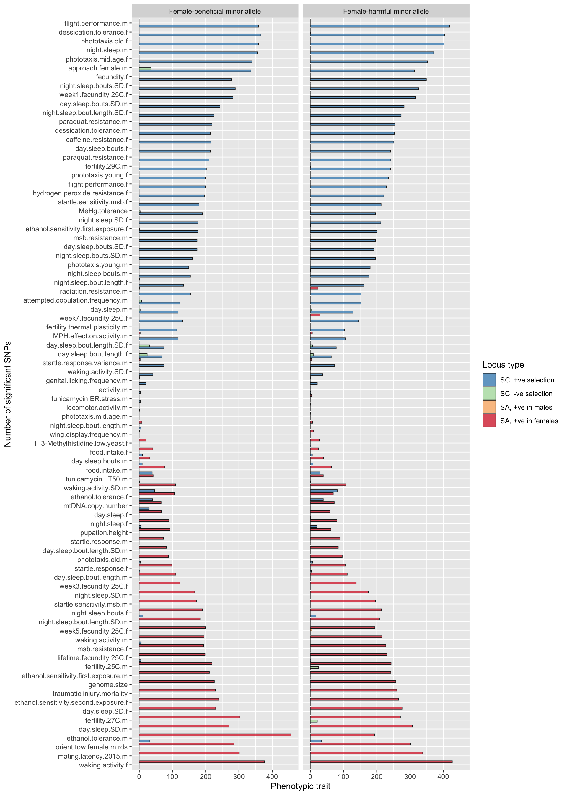
Morphological
make_plot(guilds[4])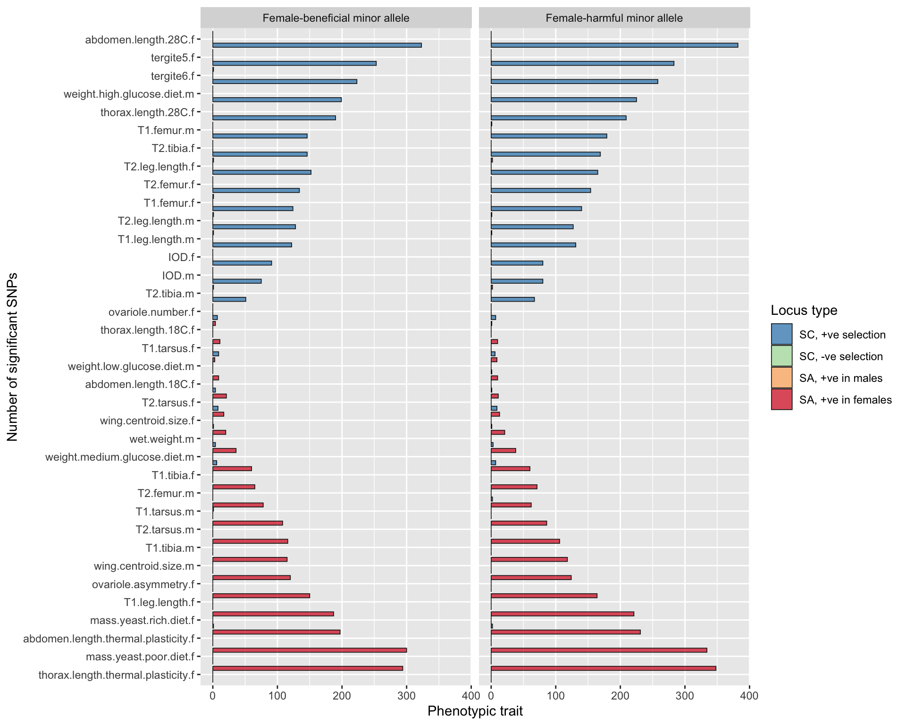
Physiological
make_plot(guilds[5])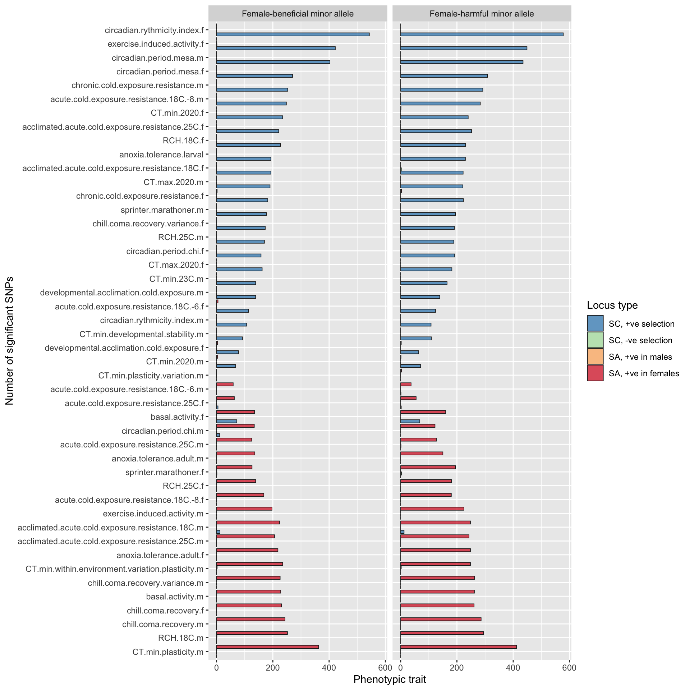
Behavioural
make_plot(guilds[7])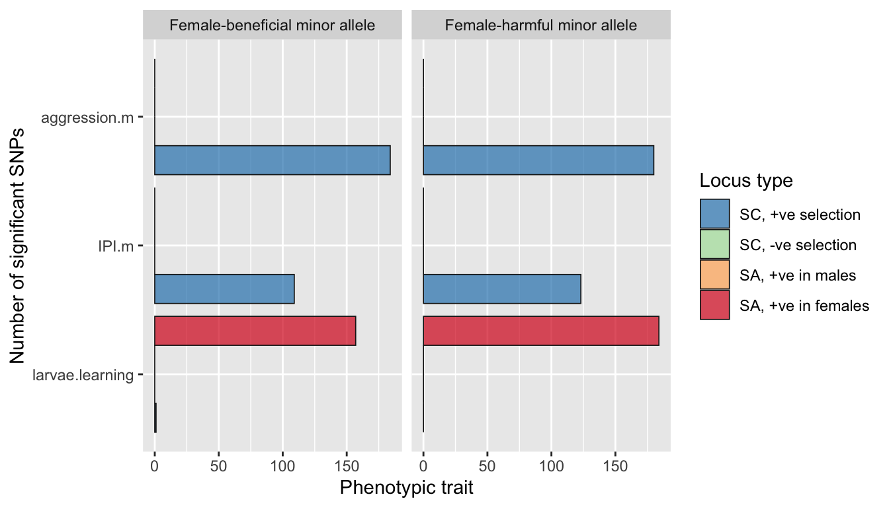
Life history
make_plot(guilds[11])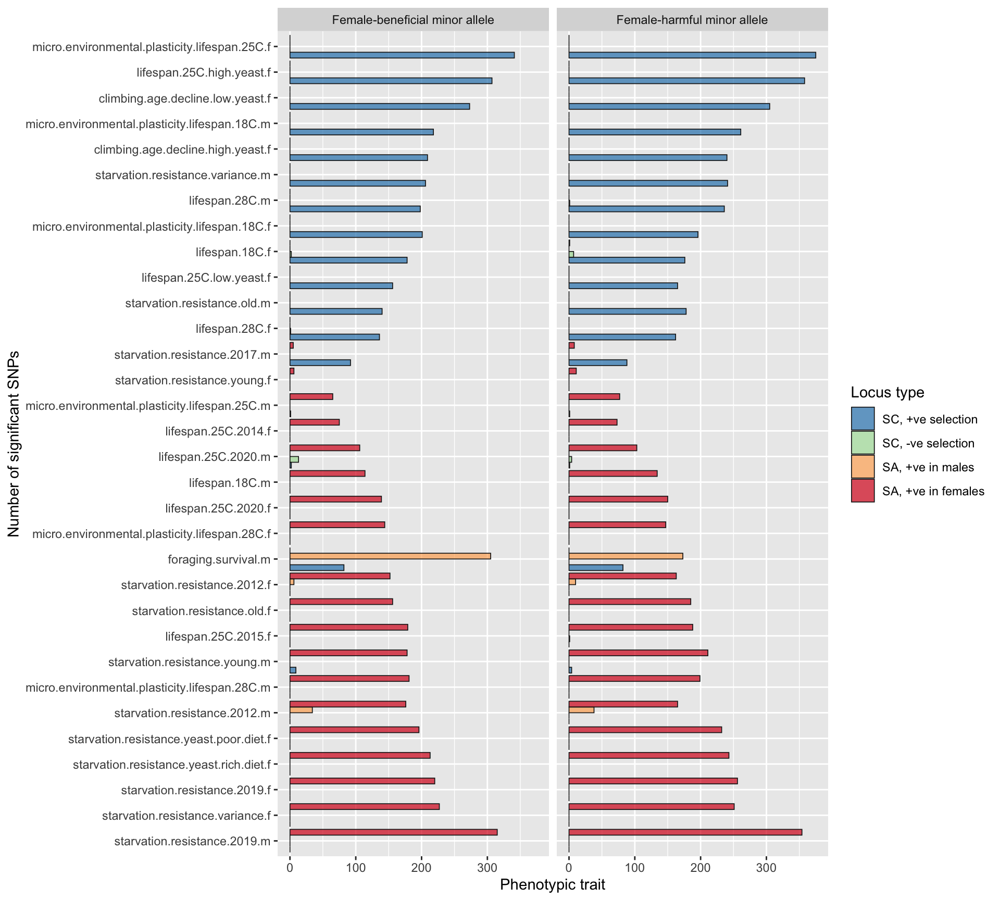
Pathogen response
make_plot(guilds[8])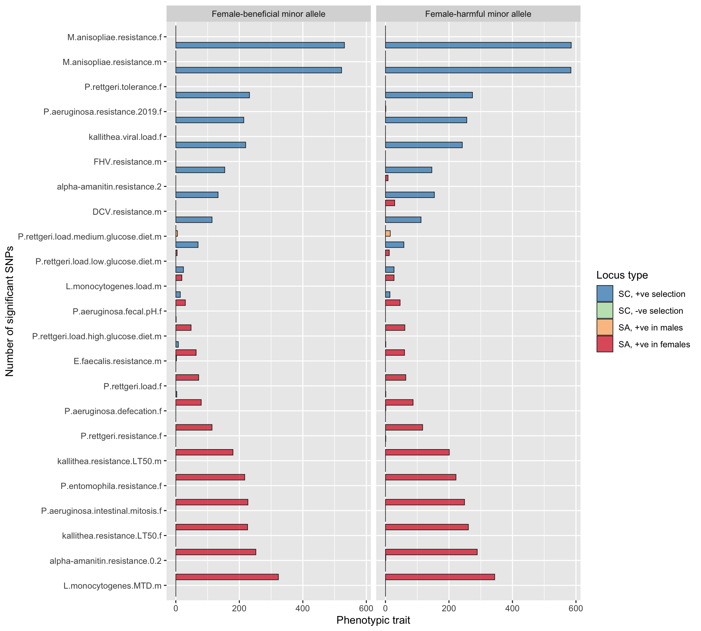
Insecticide response
Notice that the loci affecting resistance to some insecticides are under sexually antagonistic selection in some cases (like DDT) but not others (or, sexual antagonism is confined to fewer loci). Note that there is independent evidence that DDT resistance alleles are under sexually antagonistic selection, e.g. https://royalsocietypublishing.org/doi/10.1098/rspb.2016.1429.
make_plot(guilds[9])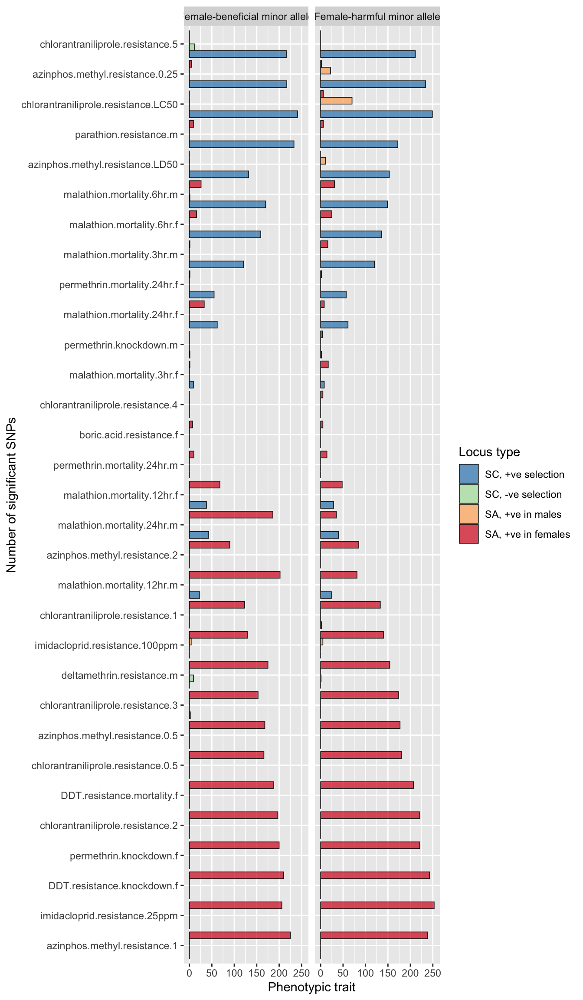
Cuticular hydrocarbons
I read that many of the dienes (those with :2 in the name) are female-biased, while monoenes (those with :1) are male-biased in the CHC profile. It might be worth seeing whether the more sex-biased CHCs tend to be sexually antagonistic.
make_plot(guilds[10])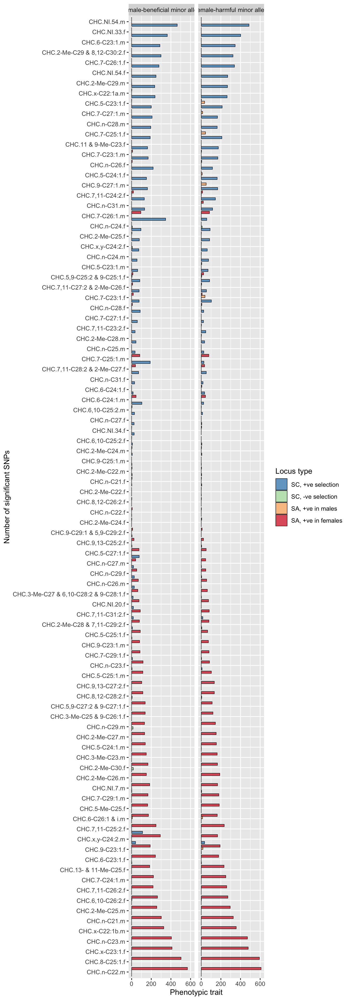
Plots showing the estimated proportions of different SNPs
mixtures <- map(all_mashr_results, ~ enframe(.x$mixture_proportions))
plot_data_mix <- map_df((1:length(mixtures)), ~ mixtures[[.x]] %>% mutate(trait = traits[.x])) %>%
left_join(read_csv("data/all.dgrp.phenos_unscaled.csv") %>%
select(Trait, `Trait guild`) %>% distinct(), by = c("trait" = "Trait")) %>%
arrange(trait, name) %>%
filter(!(name == "dimorphism_maleup" | name == "dimorphism_femaleup")) %>% # these are very rare
split(.$trait) %>%
map_df(~{
if(any(pull(.x, name) == "concord_traitpos_2")){
.x$value[.x$name == "concord_traitpos"] <- .x$value[.x$name == "concord_traitpos"] + .x$value[.x$name == "concord_traitpos_2"]
}
if(any(pull(.x, name) == "antag_posfemales_2")){
.x$value[.x$name == "antag_posfemales"] <- .x$value[.x$name == "antag_posfemales"] + .x$value[.x$name == "antag_posfemales_2"]
}
.x %>% filter(!(name %in% c("concord_traitpos_2", "antag_posfemales_2")))
}) %>%
mutate(name = replace(name, name == "concord_traitpos", "SC, +ve selection"),
name = replace(name, name == "concord_traitneg", "SC, -ve selection"),
name = replace(name, name == "antag_posfemales", "SA, +ve in females"),
name = replace(name, name == "antag_posmales", "SA, +ve in males"),
name = replace(name, name == "null", "Null")) %>%
mutate(name = factor(name, c("Null", "SC, +ve selection", "SC, -ve selection",
"SA, +ve in males", "SA, +ve in females")),
`Trait guild` = replace(`Trait guild`, is.na(`Trait guild`), "Other"),
`Trait guild` = replace(`Trait guild`, `Trait guild` == "?", "Other"))
levels_mix <- plot_data_mix %>%
group_by(trait) %>%
summarise(difference = sum(value[grepl("SA", name)]) - sum(value[grepl("SC", name)])) %>%
arrange(difference) %>% pull(trait)
pal <- c("grey20", rev(brewer.pal(4, "Spectral")))
make_plot <- function(guild){
plot_data_mix %>%
mutate(trait = factor(trait, rev(levels_mix))) %>%
filter(`Trait guild` == guild) %>%
ggplot(aes(trait, 100 * value, fill = name)) +
geom_bar(stat = "identity", position = "dodge", colour = "grey10", alpha = 0.7, size = 0.3) +
scale_fill_manual(values = pal, name = "Locus type") +
coord_flip() +
ylab("Estimated percentage of all SNPs") + xlab("Phenotypic trait")
}Unclassified traits
make_plot(guilds[1])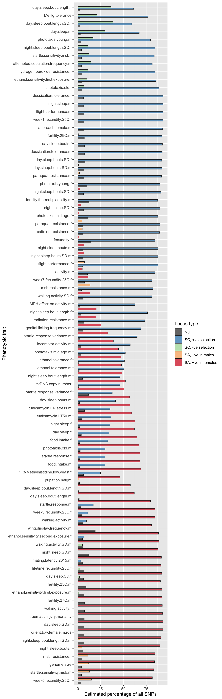
Morphological
make_plot(guilds[4])
Physiological
make_plot(guilds[5])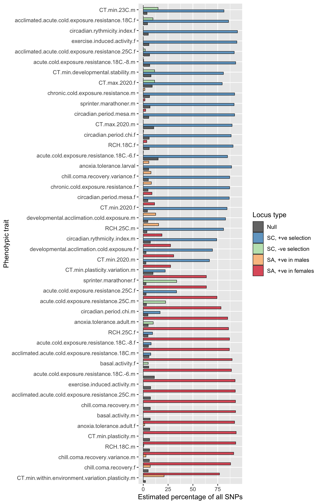
Behavioural
make_plot(guilds[7])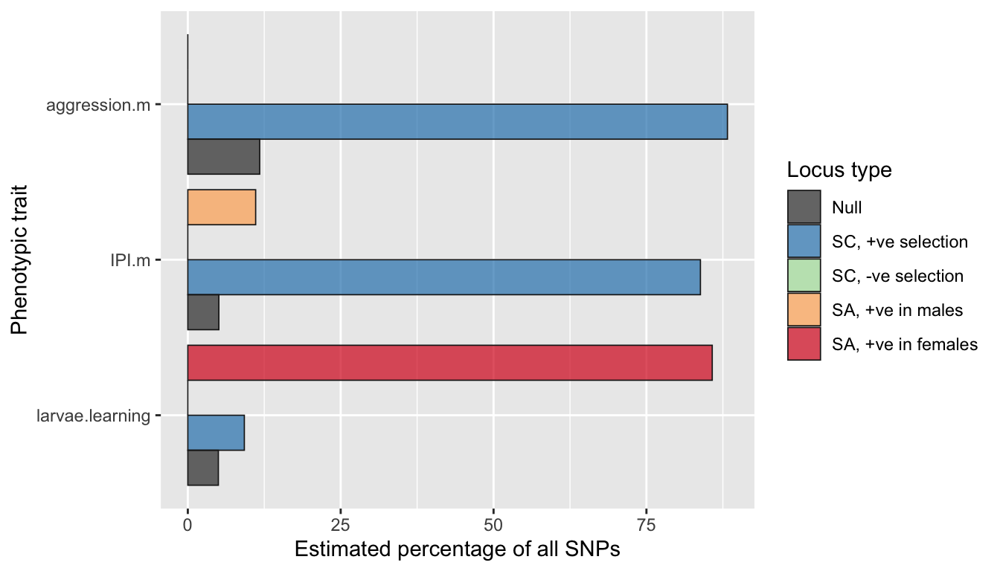
Life history
make_plot(guilds[11])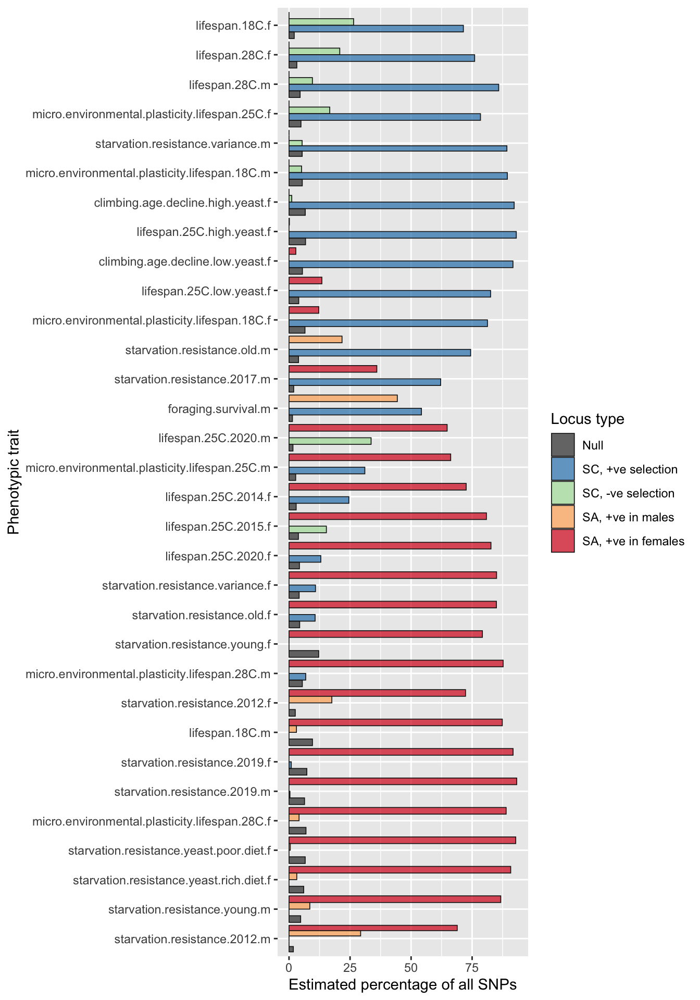
Pathogen response
make_plot(guilds[8])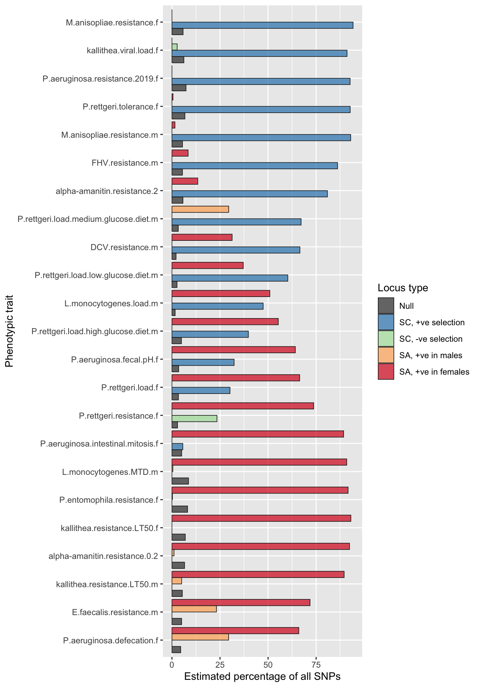
Insecticide response
Notice that the loci affecting resistance to some insecticides are under sexually antagonistic selection in some cases (like DDT) but not others (or, sexual antagonism is confined to fewer loci). Note that there is independent evidence that DDT resistance alleles are under sexually antagonistic selection, e.g. https://royalsocietypublishing.org/doi/10.1098/rspb.2016.1429.
make_plot(guilds[9])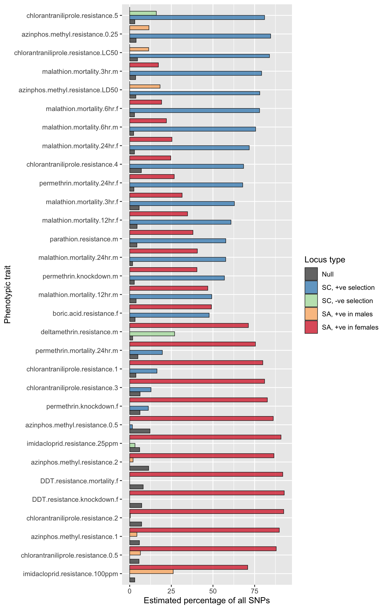
Cuticular hydrocarbons
I read that many of the dienes (those with :2 in the name) are female-biased, while monoenes (those with :1) are male-biased in the CHC profile. It might be worth seeing whether the more sex-biased CHCs tend to be sexually antagonistic.
make_plot(guilds[10])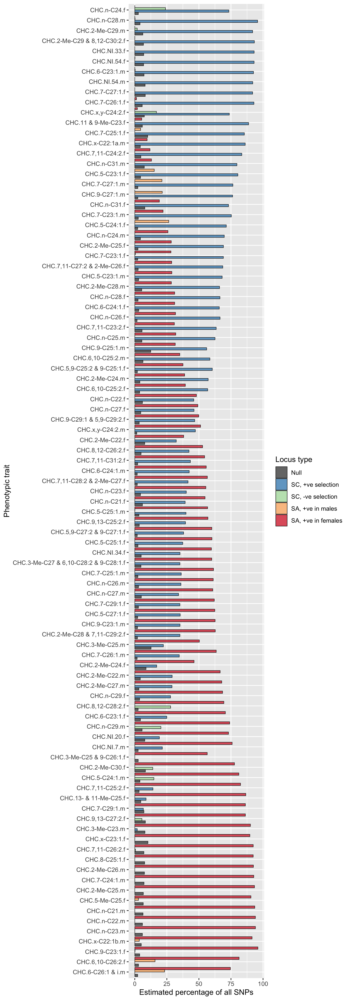
GWAS We began by filtering out loci with a minor allele frequency <5% and a missing genotype frequency >10%, and then imputing missing genotype data using Beagle (v4.1, ref). To limit the computational demands of running GWAS (and adaptive shrinkage) on millions of loci, and to address the statistical issues caused by linkage disequilibrium (LD) between loci, we pruned the dataset to a set of 226,581 loci that were in approximate LD with one another (r < 0.2) using the PLINK (v1.9) command ‘–indep-pairwise 100 10 0.2’. We then ran genome-wide association tests using linear models, implemented via the –assoc argument in PLINK (separately for each phenotypic trait). Each test yielded an effect size, its standard error, and a p-value for each locus (testing the null hypothesis that the mean phenotype did not differ between lines fixed for one or the other allele). The minor allele was treated as the alternative allele for these tests, such that a positive effect size (beta) indicates that the minor allele is associated with higher values of the focal phenotype.
Multivariate adaptive shrinkage (MASH) We further investigated the GWAS summary statistics using the R package mashr (REF), which performs multivariate adaptive shrinkage via a 2-step empirical Bayes procedure. We ran a single mashr model for each phenotypic trait, and each model additionally included measurements of early life male and female fitness from Wong REF. Firstly, we used mashr to identify patterns of correlations between the GWAS effect sizes for these 3 measures (i.e. male and female fitness, and the focal trait); mashr uses the extreme deconvolution algorithm of Bovy et al (Annals of Applied Statistics) for this purpose. Secondly, mashr runs a model using these inferred correlations, the effect size estimates, and their standard errors to derive corrected effect size estimates, as well as a Bayesian measure of confidence each effect is non-zero (the local false sign rate).
sessionInfo()R version 4.0.3 (2020-10-10)
Platform: x86_64-apple-darwin17.0 (64-bit)
Running under: macOS Catalina 10.15.7
Matrix products: default
BLAS: /Library/Frameworks/R.framework/Versions/4.0/Resources/lib/libRblas.dylib
LAPACK: /Library/Frameworks/R.framework/Versions/4.0/Resources/lib/libRlapack.dylib
locale:
[1] en_GB.UTF-8/en_GB.UTF-8/en_GB.UTF-8/C/en_GB.UTF-8/en_GB.UTF-8
attached base packages:
[1] stats graphics grDevices utils datasets methods base
other attached packages:
[1] future.apply_1.5.0 future_1.17.0 RColorBrewer_1.1-2 glue_1.4.2
[5] mashr_0.2.38 ashr_2.2-47 forcats_0.5.0 stringr_1.4.0
[9] dplyr_1.0.0 purrr_0.3.4 readr_2.0.0 tidyr_1.1.0
[13] tibble_3.0.1 ggplot2_3.3.2 tidyverse_1.3.0 workflowr_1.6.2
loaded via a namespace (and not attached):
[1] nlme_3.1-149 fs_1.4.1 lubridate_1.7.10 bit64_0.9-7
[5] httr_1.4.1 rprojroot_1.3-2 tools_4.0.3 backports_1.1.7
[9] R6_2.4.1 irlba_2.3.3 DBI_1.1.0 colorspace_1.4-1
[13] rmeta_3.0 withr_2.2.0 tidyselect_1.1.0 bit_1.1-15.2
[17] compiler_4.0.3 git2r_0.27.1 cli_2.0.2 rvest_0.3.5
[21] xml2_1.3.2 labeling_0.3 scales_1.1.1 SQUAREM_2020.2
[25] mvtnorm_1.1-0 mixsqp_0.3-43 digest_0.6.25 rmarkdown_2.5
[29] pkgconfig_2.0.3 htmltools_0.5.0 highr_0.8 dbplyr_1.4.4
[33] invgamma_1.1 rlang_0.4.6 readxl_1.3.1 rstudioapi_0.11
[37] farver_2.0.3 generics_0.0.2 jsonlite_1.7.0 vroom_1.5.3
[41] magrittr_2.0.1 Matrix_1.2-18 Rcpp_1.0.4.6 munsell_0.5.0
[45] fansi_0.4.1 abind_1.4-5 lifecycle_0.2.0 stringi_1.5.3
[49] whisker_0.4 yaml_2.2.1 plyr_1.8.6 grid_4.0.3
[53] blob_1.2.1 parallel_4.0.3 listenv_0.8.0 promises_1.1.0
[57] crayon_1.3.4 lattice_0.20-41 haven_2.3.1 hms_0.5.3
[61] knitr_1.32 pillar_1.4.4 codetools_0.2-16 reprex_0.3.0
[65] evaluate_0.14 modelr_0.1.8 vctrs_0.3.0 tzdb_0.1.2
[69] httpuv_1.5.3.1 cellranger_1.1.0 gtable_0.3.0 assertthat_0.2.1
[73] xfun_0.22 broom_0.5.6 later_1.0.0 truncnorm_1.0-8
[77] globals_0.12.5 ellipsis_0.3.1